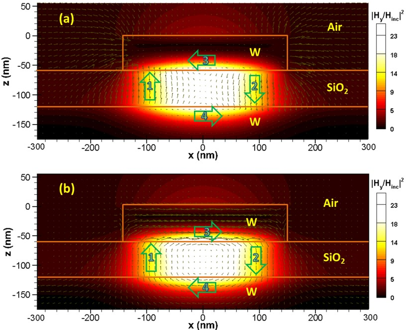
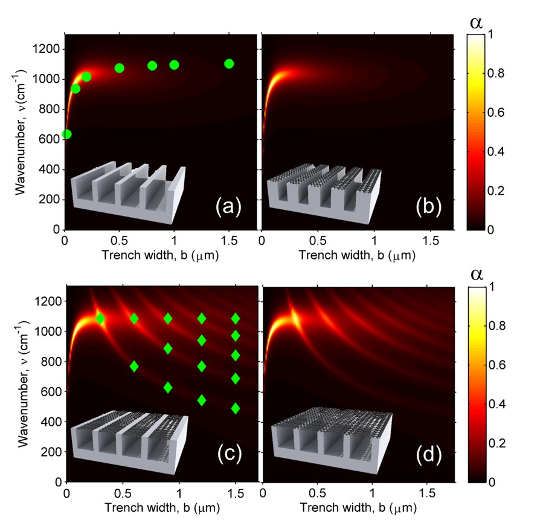

Current research directions
- Thermal photonics and plasmonics
- Photon-mediated heat engines and refrigerators
- Electronic, photonic, and thermal circuits
- Radiative properties: tuability, symmetry, nonreciprocity, topology, and beyond
- Enhanced radiative heat transfer
- Photon chemical potential and light emission from nonequilibrium bodies
- Solar energy harvesting and radiative cooling
- Electromagnetic theory
- Quantum effects in photon transport processes
Research projects
Objects around us constantly emit and absorb thermal radiation. The emission and absorption processes are governed by two fundamental radiative properties: emissivity and absorptivity. For reciprocal systems, the emissivity and absorptivity are restricted to be equal by Kirchhoff's law of thermal radiation. This restriction limits the degree of freedom to control thermal radiation and contributes to an intrinsic loss mechanism in photonic energy harvesting systems. Existing approaches to violate Kirchhoff's law typically utilize magneto-optical effects with an external magnetic field. However, these approaches require either a strong magnetic field (~ 3T), or narrow-band resonances under a moderate magnetic field (~ 0.3T), because the non-reciprocity in conventional magneto-optical effects is weak in the thermal wavelength range. Here, we show that the axion electrodynamics in magnetic Weyl semimetals can be used to construct strongly nonreciprocal thermal emitters that near completely violate Kirchhoff’s law over broad angular and frequency ranges, without requiring any external magnetic field. Related Paper

Energy transferred via thermal radiation between two surfaces separated by nanometers distances (near-field) can be much larger than the blackbody limit. However, realizing a scalable platform that utilizes this energy exchange mechanism to generate electricity remains a challenge. The challenge lies in designing a platform that can separate two large-area surfaces by a small gap while simultaneously maintaining a large temperature differential. The gap needs to be small enough to induce near-field enhancement while preventing surface contact under the effects of intrinsic film stresses, thermal stresses, surface forces (Casimir forces, Van der Waals forces, etc.) and fabrication process variations. Recent demonstrations of near-field thermo-photovoltaic rely on non-scalable external nano-positioners or on intermediate spacers that impose a limit on the near-field enhancement. Here, we present a fully integrated, reconfigurable and scalable platform operating in near-field regime that performs controlled heat extraction and energy recycling. Our platform relies on an integrated nano-electromechanical system (NEMS) that enables precise positioning of a thermal emitter within nanometers distances from a room-temperature germanium photodetector to form a thermo-photovoltaic (TPV) cell. Our electrostatically controlled NEMS switch consumes negligible tuning power and relies on scalable silicon-based process technologies. We demonstrate over an order of magnitude enhancement of power generation in our TPV cell by actively tuning the gap between a hot emitter. The significant enhancement at such small distances is a clear indication of near-field heat transfer effect. Related Paper
In conventional photon-based heat transfer, one typically assumes that the chemical potential of photons is zero. On the other hand, when a semiconductor is under external biases, the photons with energy above the semiconductor bandgap can exhibit a non-zero chemical potential that is proportional to the applied voltage. The presence of such non-zero chemical potential points to the abilities to drastically enhance the power density of photon-based heat flow, to electronically control photon-based heat transfer, and to construct photon-based heat engines for energy harvesting and solid-state cooling. Here we discuss basic concepts and applications of chemical potential for photons in controlling radiative heat transfer. Related Paper
The capability to overcome Kirchhoff’s law of thermal radiation provides new opportunities in energy harvesting and thermal radiation control. Previously design towards demonstrating such capability requires a magnetic field of 3 Tesla, which is difficult to achieve in practice. In this work, we propose a nanophotonic design that can achieve such capability with a far more modest magnetic field of 0.3 Tesla, a level that can be achieved with permanent magnets. Our design uses guided resonance in low-loss dielectric gratings sitting on a magneto-optical material, which provides significant enhancement on the sensitivity to the external magnetic field. Related Paper
Photons represent one of the most important heat carriers. The ability to convert photon heat flow to electricity is therefore of substantial importance for renewable energy applications. However, photon-based systems that convert heat to electricity, including thermophotovoltaic systems where photons are generated from passive thermal emitters, have long been limited by low power density. This limitation persists even with near-field enhancement techniques. Thermophotonic systems, which utilize active photon emitters such as light emitting diodes, have the potential to significantly further enhance the power density. However, this potential has not been realized in practice, due in part to the fundamental difficulty in thermodynamics of designing a self-sustaining circuit that enables steady-state power generation. Here, we overcome such difficulty by introducing a configuration where the light emitting diodes are connected in series, and thus multiple photons can be generated from a single injected electron. As a result we propose a self-sustaining thermophotonic circuit where the steady-state power density can exceed thermophotovoltaic systems by many orders of magnitude. This work points to new possibilities for constructing heat engines with light as the working medium. The flexibility of controlling the relations between electron and photon flux, as we show in our design, may also be of general importance for optoelectronics-based energy technology. Related Paper
The US industries reject nearly 20%-50% of the consumed energy into the environment as waste heat. Harvesting this huge amount of heat can substantially improve the energy usage efficiency. For waste heat in the medium temperature range (~500-900 K), traditional solid-state waste heat recovery techniques like thermoelectric generators and thermophotovoltaics (TPVs) are still suffering from relatively low efficiency or power density. In this work, we analyze a near-field TPV system consisting of a plasmonic emitter (indium tin oxide) and a narrow-bandgap photovoltaic cell (InAs) that are brought to deep sub-wavelength distances for high-efficiency and high-power-density waste heat recovery. We show that despite the inclusion of realistic nonradiative recombination rates and sub-bandgap heat transfer, such a near-field TPV system can convert heat to electricity with up to 40% efficiency and 11 W/cm2 power density at a 900 K emitter temperature, because of the spectral reshaping and enhancement by the thermally excited surface plasmons and waveguide modes. Thus, we show that for waste heat recovery, near-field TPV systems can have performances that significantly exceed typical thermoelectric systems. We propose a modified system to further enhance the power density by using a thin metal film on the cell, achieving a counterintuitively “blocking-assisted” heat transfer and power generation in the near-field regime. Related Paper
Heat transfer between two objects separated by a nanoscale vacuum gap holds great promise especially in energy harvesting applications such as near-field thermophotovoltaic systems. However, experimental validation of nanoscale radiative heat transfer has been largely limited to tip-plate configurations due to challenges of maintaining small gap spacing over a relatively large area. Here, we report measurements of heat transfer near room temperature between two 1 cm by 1 cm doped-Si parallel plates, separated by a vacuum gap from 200 nm to 782 nm. The measured strong near-field radiative transfer is in quantitative agreement with the theoretical prediction based on fluctuational electrodynamics. The largest measured radiative heat flux is 11 times as high as the blackbody limit for the same hot and cold surface temperatures. Our experiments have produced the highest radiative heat transfer rate observed to date across submicron distances between objects near room temperature. Related Paper

Thermophotovoltaic (TPV) devices can convert thermal radiation directly into electricity. To improve the efficiency of TPV systems, wavelength-selective emitters are designed to take thermal energy from various heat sources and then emit photons to the TPV cells. This work proposes a two-dimensional grating/thin-film nanostructure as an efficient emitter, whose performance is enhanced by the excitations of both surface plasmon polaritons (SPPs) and magnetic polaritons (MPs). The normal emittance of the proposed nanostructure is shown to be wavelength-selective and polarization-insensitive. The mechanisms of SPP and MP excitations in the nanostructure are elucidated for different polarizations. The effect of azimuthal and polar angles on the emittance spectra suggests that the proposed structure has high emittance not only in the normal direction but also at large oblique angles.Related Paper
Graphene has been demonstrated as a good candidate for ultrafast optoelectronic devices. However, graphene is essentially transparent in the visible and near infrared with an absorptivity of 2.3%, which has largely limited its application in photon detection. This work demonstrates that the absorptance in a monatomic graphene layer can be greatly enhanced to nearly 70%, thanks to the localized strong electric field resulting from magnetic resonances in deep metal gratings. Furthermore, the resonance frequency is essentially not affected by the additional graphene layer. This method may benefit the design of next-generation graphene-based optical and optoelectronic devices.Related Paper

The collective oscillation of the massless electrons in graphene ribbons can interact with photons to create graphene plasmon polaritons. The resonance-induced absorption is critical in signal detection and energy harvesting applications. However, because of their atomic thickness, high absorptance is difficult to achieve with graphene ribbons alone. In this work, a hybrid plasmonic system composed of an array of graphene ribbons over a periodic metal grating is theoretically investigated. It is shown that the localized resonances, i.e., magnetic polaritons, in metal gratings can couple with the plasmonic resonance in graphene ribbons, resulting in significantly enhanced absorption in graphene. Moreover, the coupling phenomenon depends on the width of the ribbons and the relative positions of the ribbon and the grating. The coupling between the grating and a continuous graphene monolayer sheet is also investigated and the results are compared to those with graphene ribbons. The findings of this work may facilitate the design of optoelectronic devices and metamaterials structures based on hybrid nanostructures and graphene.Related Paper
Enhancing photon tunneling probability is the key to increasing the near-field radiative heat transfer between two objects. It has been shown that hexagonal boron nitride (hBN) and graphene heterostructures can enable plentiful phononic and plasmonic resonance modes. This work demonstrates that heterostructures consisting of a monolayer graphene on a hBN film can support surface plasmon-phonon polaritons that greatly enhance the photon tunneling and outperform individual structures made of either graphene or hBN. Both the thickness of the hBN films and the chemical potential of graphene can affect the tunneling probability, offering potential routes toward passive or active control of near-field heat transfer. The results presented here may facilitate the system design for near-field energy harvesting, thermal imaging, and radiative cooling applications based on two-dimensional materials.Related Paper
The ability to support low-loss hyperbolic phonon-polaritons (HPP) by hexagonal boron nitride (hBN) films has attractive potentials for achieving perfect absorption and wavelength-selective emission for high-temperature applications. A nanostructure based on periodic metal gratings and hBN films is proposed here. As a phononic two-dimensional (2D) material, hBN has two mid-infrared Reststrahlen bands with natural hyperbolic responses. Magnetic polaritons (MP) in metal gratings can couple with HPPs in hBN to create hybrid hyperbolic phonon-plasmon polaritons, resulting in perfect or near-perfect absorption. It is found that the majority of the power absorbed by the hybrid polaritons is dissipated in the hBN film with a unique tunable location-dependent absorption profile. Meanwhile, in the frequency range where hBN does not support HPPs, optical phonons in hBN can still couple with MPs in gratings to yield resonance absorption. The effect of geometric parameters is analyzed to elucidate the mechanisms of the perfect and near-perfect absorption. The radiative properties and dissipation profiles are calculated based on rigorous coupled-wave analysis, which has been extended to include anisotropic materials. This work reveals the promising potential of using 2D materials and nanostructures to achieve unique radiative properties. The results from this work may benefit applications such as energy harvesting, radiative cooling, and photodetection.Related Paper